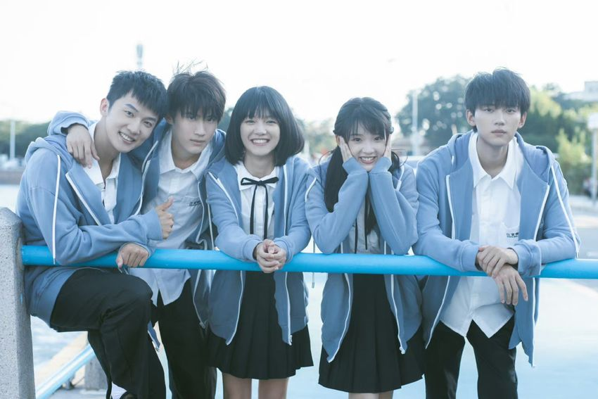
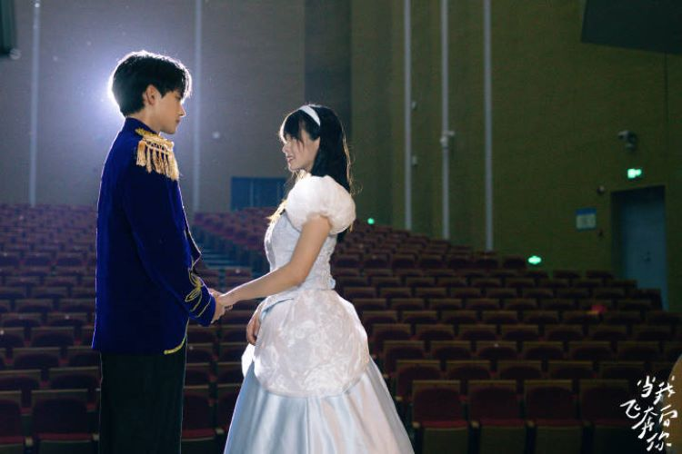
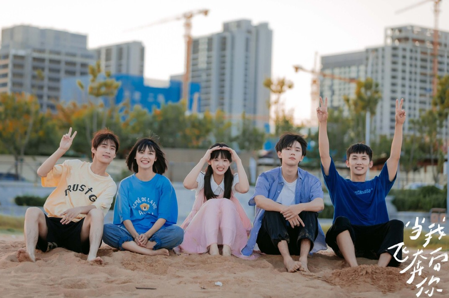

蘇在在
演員：張淼怡
開朗直球、勇敢追愛，是像陽光一樣溫暖的人。
Story
《當我飛奔向你》是一部青春校園劇，改編自竹已的《她病得不輕》。 劇情圍繞著蘇在在、張陸讓等幾位高中生展開，講述了一段甜蜜美好的初戀故事和珍貴的青春群像故事。
2012年秋天，江宜市育才中學迎來新生。開學前，樂觀開朗的少女蘇在在（張淼怡 飾） 在雨天邂逅了清冷學霸張陸讓（周翊然 飾），並對他一見鍾情。 之後，蘇在在憑借著直球式的熱情，不斷闖入張陸讓原本沈寂的生活， 用小太陽般的溫暖逐漸融化了張陸讓因原生家庭影響而構築起的心防， 讓他變得開朗自信，兩人也在相處中漸生情愫。 與此同時，張陸讓的好友顧然（邊天揚 飾）與蘇在在的好友姜佳（姜之南 飾）成為了歡喜冤家， 他們在“雞飛狗跳”的相處中互相關懷，展現出別樣的青春活力。問題少年關放（郭喆 飾）加入後， 五人在青春歲月里共同成長，一起經歷了參加社團活動、尋找班費、為考試奮鬥、校園運動會等諸多事情， 結下了深厚的友情。 從高中到大學，蘇在在和張陸讓始終相伴，他們為愛成為了更好的自己，最終在26歲時結婚懷孕，攜手走向未來。 而顧然與姜佳也收穫了愛情，顧然向姜佳表白成功。五個人的青春，充滿了溫暖、甜蜜與感動， 成為了彼此生命中最珍貴的記憶。 她用真誠與勇敢，一步步靠近他的世界；而他也在陪伴與理解中， 慢慢打開心房。故事中不只有初戀的悸動，也有朋友之間的陪伴、 成長中的迷惘，以及青春裡最珍貴的回憶。
Characters
演員：張淼怡
開朗直球、勇敢追愛，是像陽光一樣溫暖的人。
演員：周翊然
清冷學霸，內心敏感，因為陪伴而逐漸改變。
演員：邊天揚
活潑幽默，是朋友團裡帶來笑聲的存在。
演員：姜之南
可愛直率，有自己的想法，也讓青春故事更完整。
演員：郭喆
朋友團成員之一，陪伴大家一起經歷青春時光。
Information
Gallery
消失的下雨天

校園日常
婚禮

話劇
甜蜜片段

回憶中的夏天
Videos
我在在啦，我讓讓啦。
我們的紀錄 DV。